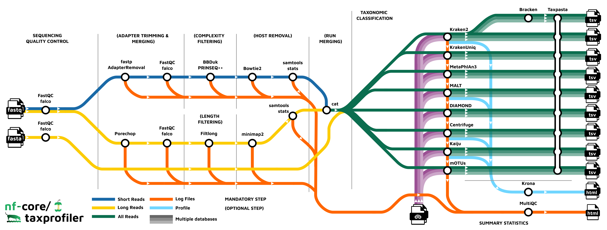

nf-core/taxprofiler: highly parallelised and flexible pipeline for metagenomic taxonomic classification and profiling
Sofia Stamouli ![]()
Moritz Beber
Thomas A. Christensen II
Maxime Borry
James A. Fellows Yates
Abstract
Metagenomic classification tackles the problem of characterising the taxonomic source of all DNA sequencing reads in a sample. A common approach to address the differences and biases between the many different taxonomic classification tools is to run sequencing libraries through multiple classification tools and databases. This, however, is a very time intensive task when performing manually - particularly when combined with the appropriate preprocessing of sequencing reads before the classification.
Here we present nf-core/taxprofiler, a highly parallelised taxonomic classification and processing pipeline that allows for automated and simultaneous classification and/or profiling of of both short- and long-read metagenomic sequencing libraries against a large number of taxonomic classifiers and profilers as well as databases in one pipeline run. Implemented in Nextflow and nf-core, the pipeline benefits from high levels of scalability and portability, allowing for large and small projects on a wide range of computing infrastructure, as well as best-practise software development and community support to ensure longevity and adaptability of the pipeline as the field of metagenomics develops. <…>
Introduction
There are a range of strong benefits of metagenomic approaches to taxonomic classification of DNA samples compared to targeted approaches [CITE]. While targeted approaches such as 16S or other marker gene amplicon sequencing have in the past been useful due to low cost and large and diverse reference databases, metagenomic analyses has been shown to produce similar resolution during taxonomic classification (Hillmann et al. 2018) (with increasing lower costs of shotgun sequencing), but the added benefit of having greater reusability potential of the data, via whole genome reconstruction and also functional classification of metagenomics.
Taxonomic profiling consists of identifying the original ‘taxonomic source’ of a given DNA sequence [CITE]. In metagenomics this typically consists of comparing millions of DNA sequences against hundreds or thousands of reference genomes either via alignment or ‘k-mer matching’ [CITE], and the most close match being considered the most likely original ‘source’ organism of that sequence. Some profilers additionally will also try to infer actual (cellular) species abundance of the organism in the original sample, based on the sequence abundance [CITE].
Due to the scale of the problem, taxonomic profiling remains an ‘unresolved problem’ in bioinformatics. Having to identify the original source of many sequences, against many reference genomes but in an efficient manner is understandably a difficult problem. Therefore a plethora of tools have been developed to address this challenge, all with their own biases and specific contexts that they have been developed in (Sczyrba et al. 2017; Meyer et al. 2022). Additionally, each tool often produces tool-specific output formats making it difficult to efficiently cross compare results. Thus, no established ‘gold standard’ method currently exists.
One solution to addressing the range of different tools is to run all of them in parallel, and cross compare the results. This can both be useful for benchmarking studies (e.g. Sczyrba et al. 2017; Meyer et al. 2022), but also to build consensus profiles whereby confidence of a particular taxonomic identification can be increased when it is detected by multiple tools [CITE].
A second challenge in taxonomic profiling is a question of databases. As with tools, there is no one set ‘gold standard’ database for taxonomic profiling. Different questions and contexts may require different databases, such as when a researcher wants to search for both bacteria_and viruses species in samples, and as an extension of this, classifiers may need different settings for each database. Furthermore, as genomic sequencing becomes cheaper and more efficient, the number of publicly available reference genomes are rapidly increasing [CITE], making the size of databases taxonomic classifiers also much a larger.
Finally, with the sinking of sequencing costs, this opens up the possibility for larger and larger metagenome sequencing, meaning the sample sizes of studies are increasing further highlighting the need for methods for efficiently profiling many samples against many tools and databases. Manually setting up bioinformatic jobs for classification tasks for each database and settings against different tools on traditional academic computing infrastructure (e.g. high performance computing clusters or ‘HPC’ clusters) can be very tedious. Additionally, particularly for very large sample sets, there is increasing use of cloud platforms that have greater scalability than traditional HPCs. Being able to reliably and reproducibly execute taxonomic classification tasks across infrastructure with minimal intervention would therefore be a boon for the metagenomics field.
Here we present nf-core/taxprofiler a pipeline designed to allow users to efficiently and simultaneously taxonomically classify and profile short- and long-read sequencing data against multiple tools and databases in a single pipeline run. nf-core/taxprofiler utilises Nextflow (Di Tommaso et al. 2017) to ensure efficiency, portability, and scalability, and has been developed within the nf-core initiative of Nextflow pipelines (Ewels et al. 2020) to ensure high quality coding practises and user accessibility, including detailed documentation and a GUI execution interface.
Implementation
nf-core/taxprofiler aims to facilitate three main steps of a typical shotgun metagenomic workflow. Taking in short- (e.g. Illumina) or long-read (e.g. Nanopore) FASTQ or FASTA files, it can perform a range of appropriate preprocessing steps of reads, then perform taxonomic classification profiling against a range of different tools depending on the wish of the user, and finally perform post-classification aggregation and standardisation of the resulting profiles with the possibility of visualisation of outputs. All relevant preprocessing statistics are displayed in an interactive and dynamic MultiQC report [CITE].
Preprocessing <…>

There are many types of metagenomic profile techniques from alignment, to k-mer, and marker-gene based methods (Quince et al. 2017).
Benchmarking
We ran nf-core/taxprofiler on a dataset of from , on a .
Run metric can be seen in Figure .
Use Cases
Here we provide a very examples
Discussion
Comparison with…
We decided not to include support for metataxonomic tools (amplicon sequencing data) as there already exists well established best-practise pipelines for this [QIIME], however conceptually tools such as XYZ that identify 16S sequences from metagenomic
Future development will see <…additional profiling tools, database construction, additional validation steps>
Data Availability
All data used in this publication
Code Availability
nf-core/taxprofiler source code is available on GitHub at https://github.com/nf-core/taxprofiler, and each release is archived on Zenodo ()
The version of the pipeline described in this paper is version () (Zenodo archive DOI: )
Supplementary Data
Acknowledgments
We thank Prof. Christina Warinner and the Microbiome Sciences group MPI-EVA for original discussions that lead to the pipeline. We are also grateful for the nf-core community for ongoing support in the development in the pipeline.
Funding
S.S. was supported by Rapid establishment of comprehensive laboratory pandemic preparedness – RAPID-SEQ This material is based upon work supported by the U.S. Department of Agriculture, Agricultural Research Service, under agreement No. 58-3022-0-001 (T.A.C II). M.B. and J.A.F.Y were supported by the Max Planck Society. J.A.F.Y was supported by the Werner Siemens-Stiftung (“Paleobiotechnology”, Awarded to Prof. Pierre Stallforth and Prof. Christina Warinner).